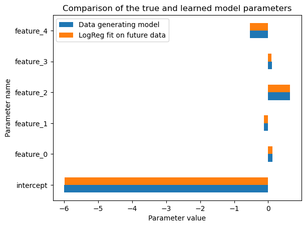
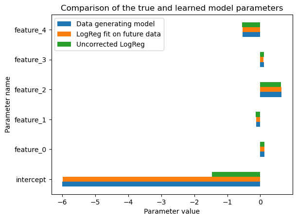
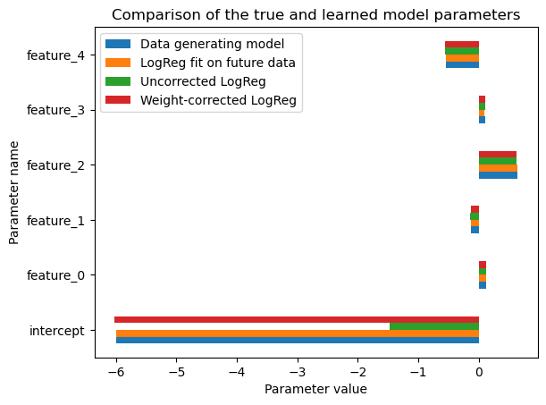
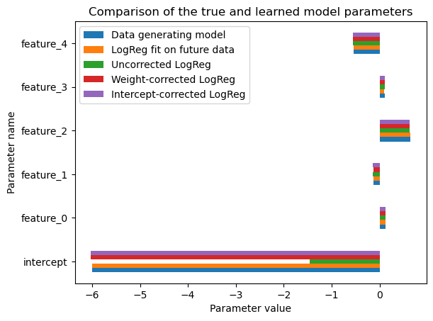
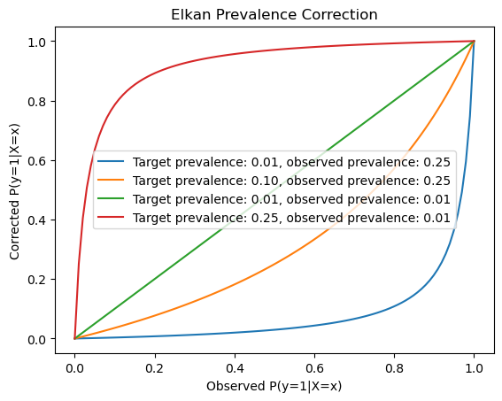
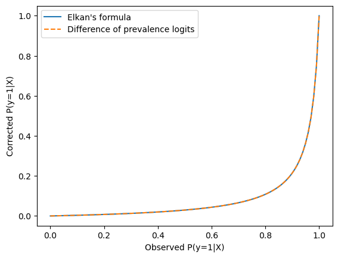

Handling prevalence shift in imbalanced classification problems#
The purpose of this study is to illustrate how to handle extreme class imbalance in the common setting where the data acquisition process itself corrupts the prevalence of the rare class.
Problem setting#
This setting is quite common in practice: let’s consider the development of a computer-aided diagnosis system to detect a rare disease that is best treated as early as possible. The data acquisition process might collect data (feature values) for all known historical cases of the disease of interest (the positive class): since the positive cases are rare, we don’t want to waste any of them and want to include them all in our dataset. However, it would be impossible to collect feature values for all the negative subjects in the target population because there are too many of them: it would be too costly and might also cause ethical and privacy issues.
Instead, we sample negative subjects from the population at random to measure their feature values only for those (and check that they do not have the disease).
As a result, the prevalence of the positive class in the collected dataset does not reflect the prevalence of the positive class in the target population. Still, we do want to train a probabilistic model on the finite collected data that achieves the best performance possible when deployed on the target population. Furthermore, we want to conduct this performance evaluation despite the fact that we cannot directly measure the performance on the full target population at once. We will therefore need to:
adapt the training procedure to take the prevalence shift into account to learn a model that yields meaningful probabilistic predictions on the target population once deployed;
adapt the evaluation procedure to ensure that our performance evaluation computed from a test subset of our observed data points can accurately reflect the expected performance of our model once deployed despite the prevalence shift.

The lack of match of prevalence between the collected dataset and the deployment setting is a result of cost or computational constraints that prevent us from training and evaluating our predictive model directly on the full target population. It is not the result of a modeling choice of the data-scientist.
Note that the classes are extremely imbalanced in the target population but can also be (slightly) imbalanced in the collected dataset. We do not need the collected dataset to be perfectly balanced.
In this study, we will illustrate how to handle such a setting by correcting the probabilistic classifier estimated from the observed data to be aligned with the target population. We will use synthetic data generated from a known data generating process so as to make it possible to check that our proposed training and evaluation methods can achieve that objective.
Data generating process#
Let’s define a “true” data generating process that represents some fundamental mechanism about the world. The true data generating process is generally unknown, and the goal of machine learning is to approximate it as closely as possible from a finite sample of data points.
Here, we want to simulate a binary classification problem where the target variable is a binary variable with a positive class that is very rare.
The typical application domain could be medical diagnosis where the feature values are physiological measurements and the target variable is a binary indicator for the presence of a rare disease of interest. Other application domains with extreme imbalance are fraud detection, credit scoring, predictive maintenance, etc.
For the sake of simplicity, we start this study by assuming that the data generating process is a linear model with a logistic link function: the features influence the probability of developing the disease but we expect them to provide only partial information about the true risk as other unobserved factors may also influence disease development. We assume the unobserved factors to be independent of the observed features and all distributions to be stationary over time.
We will later relax the linearity assumption but other assumptions will still apply.
import numpy as np
import pandas as pd
import matplotlib.pyplot as plt
from scipy.special import expit, logit
rng = np.random.default_rng(0)
dtype = np.float32 # use float32 to save memory
n_features = 5
true_coef = rng.normal(size=n_features).astype(dtype)
true_intercept = -6 # This will make the positive class very rare.
def sample_from_linear_model(true_coef, true_intercept, n_samples, seed):
rng = np.random.default_rng(seed)
X = rng.normal(size=(n_samples, n_features)).astype(dtype)
z = X @ true_coef
true_positive_proba = expit(z + true_intercept)
y = rng.binomial(n=1, p=true_positive_proba)
true_proba = np.hstack(
[1 - true_positive_proba[:, np.newaxis], true_positive_proba[:, np.newaxis]]
)
# create pandas data structures for convenience
X = pd.DataFrame(X, columns=[f"feature_{i}" for i in range(n_features)])
y = pd.Series(y, name="target")
return X, y, true_proba
The world can generate a lot of data from a fixed stationary process. Some of that data cannot be accessed at the time of the study but we generate it anyway to be able to compute metrics on the future population.
n_samples = 3_000_000
X_past, y_past, true_proba_past = sample_from_linear_model(
true_coef, true_intercept, n_samples, seed=0
)
X_future, y_future, true_proba_future = sample_from_linear_model(
true_coef, true_intercept, n_samples, seed=1
)
X_past.memory_usage().sum() / 1e6 # in MB
np.float64(60.000132)
y_past.sum()
np.int64(10471)
true_positive_rate_past = y_past.mean()
true_positive_rate_past
np.float64(0.003490333333333333)
Let us start this study by cheating and compute the metrics obtained from the true probabilities computed from the data generating process for the future feature values.
true_positive_rate_future = y_future.mean()
true_positive_rate_future
np.float64(0.0035813333333333335)
pd.Series(true_proba_future[:, 1]).describe()
count 3.000000e+06
mean 3.563308e-03
std 3.685873e-03
min 3.868309e-05
25% 1.385324e-03
50% 2.470968e-03
75% 4.405791e-03
max 1.577512e-01
dtype: float64
from sklearn.metrics import roc_auc_score, log_loss
roc_auc_score(y_future, true_proba_future[:, 1])
0.7285261289909972
log_loss(y_future, true_proba_future)
0.022418940888123372
log_loss(y_past, true_proba_past)
0.021913294606625597
Questions:#
What is the best possible value for the ROC AUC score (in general)?
What is the best possible value for the log-loss (in general)?
Why cannot we reach these values even when using the true probabilities?
What is the name of the error rate obtained when computed from the true probabilities?
# Write your answers below before scrolling down.
#
#
#
#
#
#
#
#
#
#
#
#
#
#
#
#
#
#
#
# Do not read the answers before thinking by yourself!
Answers:#
The best possible value for the ROC AUC score is 1.0.
The best possible value for the log-loss is 0.0.
We cannot reach these values because the true probabilities reflect some inherent uncertainty in the data: the value of the target variable is not deterministic given the available features. The outcome can also be influenced by unobserved factors that are not captured by the features.
The error rate obtained from the true probabilities is called the “Bayes error rate” or “irreducible error rate”.
Because we are curious, let’s continue with the cheating and check that a fit of logistic regression on the full population (with nearly unlimited data points) would be able to approximately recover the true coefficients and intercept.
from sklearn.linear_model import LogisticRegression
cheating_model = LogisticRegression(penalty=None).fit(X_future, y_future)
Now let’s compare the true and learned model parameters with the help of a utility class that we will reuse throughout this notebook. Feel free to skip over the details of the implementation, the method names and their outputs should be self-explanatory.
class ModelComparator:
def __init__(self, X, y, context_name, sample_weight=None):
self.X = X
self.y = y
self.sample_weight = sample_weight
self.context_name = context_name
self.models = {}
self.evaluation_records = {}
def score_model(self, model_name, predicted_proba):
self.evaluation_records[model_name] = {
"Model": model_name,
f"ROC AUC ({self.context_name})": roc_auc_score(
self.y,
predicted_proba[:, 1],
sample_weight=self.sample_weight,
),
f"log-loss ({self.context_name})": log_loss(
self.y,
predicted_proba,
sample_weight=self.sample_weight,
),
}
return self
def register_linear_data_generating_model(self, true_coef, true_intercept):
self.true_coef = true_coef
self.true_intercept = true_intercept
oracle_proba = expit(self.true_intercept + self.X @ self.true_coef).values
oracle_proba = np.hstack(
[1 - oracle_proba[:, np.newaxis], oracle_proba[:, np.newaxis]]
)
self.score_model("Data generating model", oracle_proba)
return self
def register_model(self, model_name, model):
self.models[model_name] = model
self.score_model(model_name, model.predict_proba(self.X))
return self
def register_models(self, models):
for model_name, model in models.items():
self.register_model(model_name, model)
return self
def score_table(self):
return (
pd.DataFrame(self.evaluation_records.values()).round(6).set_index("Model")
)
def plot_linear_model_parameters(self):
column_data = {}
if hasattr(self, "true_coef"):
column_data["Data generating model"] = np.hstack(
(self.true_intercept, self.true_coef)
)
column_data.update(
{
model_name: np.hstack((model.intercept_, model.coef_.flatten()))
for model_name, model in self.models.items()
}
)
pd.DataFrame(
column_data,
index=np.hstack(["intercept", self.X.columns]),
).plot.barh().set(
title="Comparison of the true and learned model parameters",
xlabel="Parameter value",
ylabel="Parameter name",
)
population_comparator = ModelComparator(X_future, y_future, context_name="population")
population_comparator.register_linear_data_generating_model(true_coef, true_intercept)
population_comparator.register_model("LogReg fit on future data", cheating_model)
population_comparator.plot_linear_model_parameters()

We can see that the learned model parameters nearly recover the data generating parameters. This is expected since the logistic regression model without penalty is well specified for this data generating process, the logistic regression model is trained by minimizing a strictly proper scoring rule (namely the log-loss), we have a large number of data points and the features are uncorrelated.
Unfortunately, mere mortal data scientists cannot pd.read_csv from the
future, so instead we will simulate the data acquisition process and train
our models only from the past observed data.
Prevalence shift induced by the data acquisition process#
The following code simulates what could happen in practice when working in such a setting: we subsample the simulated population to collect all the positive cases and a random sample of negatives from the past data.
We subsample only the negative cases (control group) to reflect the fact that the negative data is less interesting than the rare positive cases: as such, the negative data is in general not archived fully in databases, or even the features of most of the negative cases are not acquired at all in the first place.
mask_positive_target = y_past == 1
X_positive = X_past[mask_positive_target].copy()
y_positive = y_past[mask_positive_target].copy()
rng = np.random.default_rng(0)
negative_indices = rng.choice(
np.flatnonzero(~mask_positive_target),
size=3 * len(y_positive),
replace=False,
)
X_observed = pd.concat([X_positive, X_past.iloc[negative_indices]])
y_observed = pd.concat([y_positive, y_past.iloc[negative_indices]])
X_observed.shape
(41884, 5)
observed_positive_rate = y_observed.sum() / len(y_observed)
observed_positive_rate
np.float64(0.25)
Now that the data is collected, we can train-test split it to reflect what a data scientist would do in practice to train and evaluate their model from the observed data.
from sklearn.model_selection import train_test_split
X_train, X_test, y_train, y_test = train_test_split(
X_observed, y_observed, test_size=0.5, random_state=0
)
logreg_params = dict(penalty=None, tol=1e-8)
logreg_uncorrected = LogisticRegression(**logreg_params).fit(X_train, y_train)
population_comparator.register_model("Uncorrected LogReg", logreg_uncorrected)
population_comparator.plot_linear_model_parameters()
population_comparator.score_table()
| ROC AUC (population) | log-loss (population) | |
|---|---|---|
| Model | ||
| Data generating model | 0.728526 | 0.022419 |
| LogReg fit on future data | 0.728519 | 0.022419 |
| Uncorrected LogReg | 0.728478 | 0.267719 |

The above results show that naively fitting a logistic regression model on the observed data yields a model with very good ranking power (as measured by ROC-AUC on the target population) and the feature coefficients seem to be well aligned with the parameters of the data generating process.
However, it does not fully recover the true data generating process. In particular, the intercept value is not correctly estimated. As a result, the value of the log-loss is very poor because the probabilistic predictions are not well calibrated.
In the following, we will explore several ways to correct this problem.
Weight-based prevalence correction for Logistic Regression#
The first approach we will explore is to use class weights to correct for the prevalence shift in the training data.
In scikit-learn, class weights are passed as constructor parameter to the estimator (one weight per possible class). Here we pass the ratios of each class prevalence in the target population and the training set:
class_weight_for_prevalence_correction = {
0: (1 - true_positive_rate_past) / (1 - y_train.mean()),
1: true_positive_rate_past / y_train.mean(),
}
class_weight_for_prevalence_correction
{0: np.float64(1.3305008249495271), 1: np.float64(0.013904234481009447)}
logreg_weighted = LogisticRegression(
class_weight=class_weight_for_prevalence_correction, **logreg_params
).fit(X_train, y_train)
population_comparator.register_model("Weight-corrected LogReg", logreg_weighted)
population_comparator.plot_linear_model_parameters()
population_comparator.score_table()
| ROC AUC (population) | log-loss (population) | |
|---|---|---|
| Model | ||
| Data generating model | 0.728526 | 0.022419 |
| LogReg fit on future data | 0.728519 | 0.022419 |
| Uncorrected LogReg | 0.728478 | 0.267719 |
| Weight-corrected LogReg | 0.728445 | 0.022421 |

We can see that passing class-weights to the estimator has the desired effect of correcting the prevalence shift in the training data: the ROC-AUC values stays roughly the same while the log-loss is significantly reduced and nearly matches the expected log-loss of the data generating process when evaluated on the target population.
Let’s check that we can get exactly the same results using sample_weight in
fit instead of class_weight in the constructor. We just repeat the
class-weight for each data point in the training set based on their class
label. If all goes well, this should be strictly equivalent hence should
converge exactly to the same model.
sample_weight_for_prevalence_correction = np.where(
y_train == 0,
class_weight_for_prevalence_correction[0],
class_weight_for_prevalence_correction[1],
)
logreg_weighted2 = LogisticRegression(**logreg_params).fit(
X_train, y_train, sample_weight=sample_weight_for_prevalence_correction
)
logreg_weighted2.coef_, logreg_weighted2.intercept_
(array([[ 0.11746132, -0.13513052, 0.62930597, 0.11434373, -0.55310262]]),
array([-6.0258028]))
np.allclose(logreg_weighted.coef_, logreg_weighted2.coef_)
True
np.allclose(logreg_weighted.intercept_, logreg_weighted2.intercept_)
True
Post-hoc prevalence correction for logistic regression by shifting the intercept#
From the above results, it seems that the uncorrected linear model and the weight-corrected linear models only significantly differ by the value of the intercept parameter.
Indeed, it can be shown that the intercept of a logistic regression model can be corrected by shifting it by the difference of the logits of the prevalence in the target population and the training set.
See for instance: https://stats.stackexchange.com/a/68726/2150
Recall that the logit function is defined as:
Let’s implement this intercept correction as follows:
from scipy.special import logit
logreg_intercept_corrected = LogisticRegression(**logreg_params).fit(X_train, y_train)
intercept_shift = logit(true_positive_rate_past) - logit(y_train.mean())
logreg_intercept_corrected.intercept_ += intercept_shift
population_comparator.register_model(
"Intercept-corrected LogReg", logreg_intercept_corrected
)
population_comparator.plot_linear_model_parameters()
population_comparator.score_table()
| ROC AUC (population) | log-loss (population) | |
|---|---|---|
| Model | ||
| Data generating model | 0.728526 | 0.022419 |
| LogReg fit on future data | 0.728519 | 0.022419 |
| Uncorrected LogReg | 0.728478 | 0.267719 |
| Weight-corrected LogReg | 0.728445 | 0.022421 |
| Intercept-corrected LogReg | 0.728478 | 0.022420 |

We recover an intercept value that is very close to the intercept of the data generating process.
Generic post-hoc prevalence correction#
Let’s now consider a more generic post-hoc prevalence correction that does
not require the base model to be a logistic regression model with an explicit
intercept_ parameter.
Charles Elkan proposed a closed-form formula to correct the predicted probabilities of any binary classifier:
def elkan_prevalence_correction(
uncorrected_positive_proba, target_prevalence, observed_prevalence
):
"""Post-hoc prevalence correction for binary classifiers.
Given a classifier to be trained on a class-conditional subsampled dataset
and an estimate of the prevalence of the positive class in the target
population, estimate the conditional probability of the positive class for
each data point in the test set.
This meta-estimator implements the formula of Theorem 2 of [Elkan 2001]:
The Foundations of Cost-Sensitive Learning, Charles Elkan, IJCAI 2001
https://cseweb.ucsd.edu/~elkan/rescale.pdf
p' = b'(p - pb) / (b - pb + b'p - b'b)
with:
- p' is the corrected estimate of P_target(y=1|X=x) on the target population.
- p is the observed estimate of P_data(y=1|X=x) on the training set.
- b' is the prevalence of the positive class in the target population.
- b is the observed prevalence of the positive class measured in the
training set.
"""
# b'(p - pb)
numerator = target_prevalence * (
uncorrected_positive_proba - (uncorrected_positive_proba * observed_prevalence)
)
# b - pb + b'p - b'b
denominator = (
observed_prevalence
- (uncorrected_positive_proba * observed_prevalence)
+ (target_prevalence * uncorrected_positive_proba)
- (target_prevalence * observed_prevalence)
)
return numerator / denominator
We can wrap this correction function into a meta-estimator compatible with the scikit-learn API:
from sklearn.base import BaseEstimator, ClassifierMixin, clone
class PostHocPrevalenceCorrection(ClassifierMixin, BaseEstimator):
def __init__(self, estimator=None, target_positive_rate=0.5):
self.estimator = estimator
self.target_positive_rate = target_positive_rate
def fit(self, X, y, **fit_params):
if self.estimator is None:
estimator = LogisticRegression()
else:
estimator = clone(self.estimator)
self.estimator_ = estimator.fit(X, y, **fit_params)
self.observed_positive_rate_ = y.mean()
return self
def predict_proba(self, X):
uncorrected_proba = self.estimator_.predict_proba(X)
corrected_positive_proba = elkan_prevalence_correction(
uncorrected_proba[:, 1],
self.target_positive_rate,
self.observed_positive_rate_,
)
corrected_proba = np.zeros_like(uncorrected_proba)
corrected_proba[:, 1] = corrected_positive_proba
corrected_proba[:, 0] = 1 - corrected_positive_proba
return corrected_proba
def predict(self, X):
proba = self.predict_proba(X)
return (proba[:, 1] >= 0.5).astype(np.int32)
logreg_post_hoc = PostHocPrevalenceCorrection(
estimator=LogisticRegression(**logreg_params),
target_positive_rate=true_positive_rate_past,
).fit(X_train, y_train)
For a Logistic Regression model, this generic post-hoc imbalance correction should be strictly equivalent to our previously introduced post-hoc correction of the intercept parameter:
np.allclose(
logreg_post_hoc.predict_proba(X_future),
logreg_intercept_corrected.predict_proba(X_future),
)
True
A proof of the mathematical equivalence is given as an appendix at the end of this notebook.
Therefore we should get exactly the same evaluation metric values as before:
population_comparator.register_model("Post-hoc corrected LogReg", logreg_post_hoc)
population_comparator.score_table()
| ROC AUC (population) | log-loss (population) | |
|---|---|---|
| Model | ||
| Data generating model | 0.728526 | 0.022419 |
| LogReg fit on future data | 0.728519 | 0.022419 |
| Uncorrected LogReg | 0.728478 | 0.267719 |
| Weight-corrected LogReg | 0.728445 | 0.022421 |
| Intercept-corrected LogReg | 0.728478 | 0.022420 |
| Post-hoc corrected LogReg | 0.728478 | 0.022420 |
Questions:#
Consider the two kinds of post-hoc prevalence correction presented above:
what happens when we pass
target_positive_rate=y_train.mean()?is it possible to get
predict_probavalues that are not in \([0, 1]\) by setting extreme values fortarget_positive_rate?why is the ROC-AUC score not affected by any of the post-hoc correction methods?
Recall that the expit function is takes any real number as input and
returns a value in [0, 1]:
The expit function inverse function is the logit function.
# Write your answers below before scrolling down.
#
#
#
#
#
#
#
#
#
#
#
#
#
#
#
#
#
#
#
# Do not read the answers before thinking by yourself!
Answers:#
When we pass
target_positive_rate=y_train.mean(), the intercept correctionlogit(target_positive_rate) - logit(y_train.mean())will be zero, hence no correction is applied.Similarly, setting \(b = b'\) in the formula of the docstring of
elkan_prevalence_correctionwill cause the expression to simplify to \(p = p'\).Shifting the intercept of a logistic regression model can never make its predictions go outside of the [0, 1] interval since is prediction function is
expit(X @ coef + intercept): theexpitfunction is defined for all real numbers and maps them to the [0, 1] interval.For
elkan_prevalence_correction, the result is less obvious but we can check empirically that the corrected probabilities are also in [0, 1] by tweaking the inputs of the plotting snippet below.Both correction methods are monotonic transformations of the predicted probabilities, hence they preserve the order of the predictions. As a result, the relative ranking of the instances remains unchanged and therefore the ROC-AUC score is not affected by any of the post-hoc correction methods.
p = np.linspace(0, 1, 100)
for target_prevalence, observed_prevalence in [
(0.01, 0.25),
(0.1, 0.25),
(0.01, 0.01),
(0.25, 0.01),
]:
plt.plot(
p,
elkan_prevalence_correction(
p,
target_prevalence=target_prevalence,
observed_prevalence=observed_prevalence,
),
label=(
f"Target prevalence: {target_prevalence:.2f}, "
f"observed prevalence: {observed_prevalence:.2f}"
),
)
plt.xlabel("Observed P(y=1|X=x)")
plt.ylabel("Corrected P(y=1|X=x)")
plt.title("Elkan Prevalence Correction")
_ = plt.legend()

Evaluating models on observed test data#
As we saw above, we have several ways to correct the predictions of a classifier to account for difference of class distribution between the observed training data and the target population.
However, data-scientists do not have access to the future population to assess the expected performance of their model on the future population.
Instead, they can only evaluate the model on the observed test data. However, the observed test data has a different class distribution: in our case, the number of negative cases is much lower in the observed data (train or test) than in the target population.
If we naively evaluate the model on the observed test data, we will get misleading results: the model will be evaluated on a test set that does not reflect the true class prevalence, hence calibration sensitive losses such as the log-loss will give very inaccurate estimates of the population log-loss:
log_loss(y_test, logreg_uncorrected.predict_proba(X_test))
log_loss(y_future, logreg_uncorrected.predict_proba(X_future))
0.26771874332772677
Therefore, we need to apply the same class ratio correction to the evaluation
set. Scikit-learn metric functions usually do not provide a class_weight
parameter but they often provide a sample_weight parameter.
Let’s evaluate the log-loss of the uncorrected model on the test set with the sample weights and check that it correctly estimate the population log-loss that same model:
sample_weight_test = np.where(
y_test == 0,
(1 - true_positive_rate_past) / (1 - y_test.mean()),
true_positive_rate_past / y_test.mean(),
)
log_loss(
y_test, logreg_uncorrected.predict_proba(X_test), sample_weight=sample_weight_test
)
0.2689377943256687
log_loss(y_future, logreg_uncorrected.predict_proba(X_future))
0.26771874332772677
The test data is a comparatively small finite set, so the estimation of the population log-loss is not perfect but close enough and the weighting definitely helps obtain metric values that are aligned with the expected population log-loss.
Let’s now evaluate one of the corrected models:
log_loss(
y_test,
logreg_intercept_corrected.predict_proba(X_test),
sample_weight=sample_weight_test,
)
0.021907368827423234
log_loss(y_future, logreg_intercept_corrected.predict_proba(X_future))
0.022420456136417546
We can see that weighting the test observed data makes it possible to approximate the population log-loss (at least up to 2 to 3 decimal places in this case).
Let’s consolidate all scores for all models into a single table:
weighted_test_set_comparator = ModelComparator(
X_test, y_test, context_name="weighted test set", sample_weight=sample_weight_test
).register_models(population_comparator.models)
weighted_test_set_comparator.score_table().merge(
population_comparator.score_table(), on="Model"
)
| ROC AUC (weighted test set) | log-loss (weighted test set) | ROC AUC (population) | log-loss (population) | |
|---|---|---|---|---|
| Model | ||||
| LogReg fit on future data | 0.730438 | 0.021908 | 0.728519 | 0.022419 |
| Uncorrected LogReg | 0.730392 | 0.268938 | 0.728478 | 0.267719 |
| Weight-corrected LogReg | 0.730320 | 0.021908 | 0.728445 | 0.022421 |
| Intercept-corrected LogReg | 0.730392 | 0.021907 | 0.728478 | 0.022420 |
| Post-hoc corrected LogReg | 0.730392 | 0.021907 | 0.728478 | 0.022420 |
This confirms that all the prevalence corrected models perform well when evaluated on the weighted test set and that furthermore, their metric values approximate well enough their expected population counterparts (up to 3 decimal places).
Non-linear data generating process#
We will now check that the same prevalence correction methods can be applied to non-linear models applied to classification problems with a non-linear decision boundary.
Let’s start by defining a nonlinear data generating process with a low prevalence of the positive class.
def sample_from_nonlinear_model(n_samples, seed):
rng = np.random.default_rng(seed)
X = rng.normal(size=(n_samples, n_features)).astype(dtype)
logits = X[:, 4].copy()
logits *= np.where((X[:, 0] > 0), -1, 1)
logits *= np.where((X[:, 0] < -1) & (X[:, 1] > 1), -1, 1)
true_positive_proba = expit(logits - 6)
y = rng.binomial(n=1, p=true_positive_proba)
true_proba = np.hstack(
[1 - true_positive_proba[:, np.newaxis], true_positive_proba[:, np.newaxis]]
)
# create pandas data structures for convenience
X = pd.DataFrame(X, columns=[f"feature_{i}" for i in range(n_features)])
y = pd.Series(y, name="target")
return X, y, true_proba
X_past_nonlinear, y_past_nonlinear, true_proba_past_nonlinear = (
sample_from_nonlinear_model(n_samples, seed=0)
)
X_future_nonlinear, y_future_nonlinear, true_proba_future_nonlinear = (
sample_from_nonlinear_model(n_samples, seed=1)
)
y_past_nonlinear.sum(), y_past_nonlinear.mean()
(np.int64(11968), np.float64(0.0039893333333333334))
population_comparator_nonlinear = ModelComparator(
X_future_nonlinear, y_future_nonlinear, context_name="nonlinear population"
).score_model("Data generating model", true_proba_future_nonlinear)
population_comparator_nonlinear.score_table()
| ROC AUC (nonlinear population) | log-loss (nonlinear population) | |
|---|---|---|
| Model | ||
| Data generating model | 0.760236 | 0.024175 |
Let’s subsample to simulate the prevalence shift introduced at data acquisition time and split the observed data.
mask_positive_target_nonlinear = y_past_nonlinear == 1
X_positive_nonlinear = X_past_nonlinear[mask_positive_target_nonlinear].copy()
y_positive_nonlinear = y_past_nonlinear[mask_positive_target_nonlinear].copy()
rng = np.random.default_rng(0)
negative_indices_nonlinear = rng.choice(
np.flatnonzero(~mask_positive_target_nonlinear),
size=3 * len(y_positive_nonlinear),
replace=False,
)
X_observed_nonlinear = pd.concat(
[X_positive_nonlinear, X_past_nonlinear.iloc[negative_indices_nonlinear]]
)
y_observed_nonlinear = pd.concat(
[y_positive_nonlinear, y_past_nonlinear.iloc[negative_indices_nonlinear]]
)
X_observed_nonlinear.shape
(47872, 5)
y_observed_nonlinear.mean()
np.float64(0.25)
X_train_nonlinear, X_test_nonlinear, y_train_nonlinear, y_test_nonlinear = (
train_test_split(
X_observed_nonlinear, y_observed_nonlinear, test_size=0.5, random_state=0
)
)
Failure of logistic regression models on nonlinear classification#
Let’s check that linear models perform sub-optimally on this dataset, even after prevalence correction.
logreg_uncorrected_nonlinear = LogisticRegression(**logreg_params).fit(
X_train_nonlinear, y_train_nonlinear
)
logreg_intercept_corrected_nonlinear = LogisticRegression(**logreg_params).fit(
X_train_nonlinear,
y_train_nonlinear,
)
logreg_intercept_corrected_nonlinear.intercept_ += logit(
y_past_nonlinear.mean()
) - logit(y_train_nonlinear.mean())
class_weight_for_prevalence_correction_nonlinear = {
0: (1 - y_past_nonlinear.mean()) / (1 - y_train_nonlinear.mean()),
1: (y_past_nonlinear.mean() / y_train_nonlinear.mean()),
}
logreg_weighted_nonlinear = LogisticRegression(
class_weight=class_weight_for_prevalence_correction_nonlinear, **logreg_params
).fit(X_train_nonlinear, y_train_nonlinear)
population_comparator_nonlinear.register_models(
{
"Uncorrected LogReg": logreg_uncorrected_nonlinear,
"Intercept-corrected LogReg": logreg_intercept_corrected_nonlinear,
"Weight-corrected LogReg": logreg_weighted_nonlinear,
}
).score_table()
| ROC AUC (nonlinear population) | log-loss (nonlinear population) | |
|---|---|---|
| Model | ||
| Data generating model | 0.760236 | 0.024175 |
| Uncorrected LogReg | 0.511659 | 0.292577 |
| Intercept-corrected LogReg | 0.511659 | 0.026163 |
| Weight-corrected LogReg | 0.512821 | 0.026162 |
Question#
What can you conclude from the above results? Is this expected?
# Write your answers below before scrolling down.
#
#
#
#
#
#
#
#
#
#
#
#
#
#
#
#
#
#
#
# Do not read the answers before thinking by yourself!
Answers#
The results show that all three variants of the linear models fail to perform correctly on this task:
All three models have ROC-AUC scores barely above to 0.5, indicating nearly useless ranking performance. This is expected because the direction of the impact of feature #4 on the target variable depends on whether other features are above or below certain thresholds. Linear models are not able to capture such complex relationships and are therefore mis-specified for this problem class.
The uncorrected variant has the worst log-loss because in addition of very poor ranking power, it also over predicts the positive class (bad calibration).
The log-loss of the prevalence-corrected models is significantly lower, indicating better calibration. Still, their lack of ranking power make them unable to reach the optimal performance quantified by the log-loss measured for the data generating model.
Fitting non-linear models#
Exercise#
Fit 3 different variants of the gradient boosting classification model to the training data for the non-linear classification problem:
One without any kind of prevalence correction;
One with weight-based prevalence correction;
One with the Elkan post-hoc prevalence correction.
Then score them all on the population comparator for the non-linear classification problem and analyse the results.
from sklearn.ensemble import HistGradientBoostingClassifier
# TODO: implement me before scrolling to read and execute the solution!
#
#
#
#
#
#
#
#
#
#
#
#
#
#
#
#
#
#
#
# Solution below:
Solution#
gbdt_uncorrected = HistGradientBoostingClassifier(random_state=0).fit(
X_train_nonlinear, y_train_nonlinear
)
gbdt_weighted = HistGradientBoostingClassifier(
random_state=0,
class_weight=class_weight_for_prevalence_correction_nonlinear,
).fit(X_train_nonlinear, y_train_nonlinear)
gbdt_post_hoc = PostHocPrevalenceCorrection(
estimator=HistGradientBoostingClassifier(random_state=0),
target_positive_rate=y_past_nonlinear.mean(),
).fit(X_train_nonlinear, y_train_nonlinear)
population_comparator_nonlinear.register_models(
{
"Uncorrected GBDT": gbdt_uncorrected,
"Weight-corrected GBDT": gbdt_weighted,
"Post-hoc corrected GBDT": gbdt_post_hoc,
}
)
population_comparator_nonlinear.score_table()
| ROC AUC (nonlinear population) | log-loss (nonlinear population) | |
|---|---|---|
| Model | ||
| Data generating model | 0.760236 | 0.024175 |
| Uncorrected LogReg | 0.511659 | 0.292577 |
| Intercept-corrected LogReg | 0.511659 | 0.026163 |
| Weight-corrected LogReg | 0.512821 | 0.026162 |
| Uncorrected GBDT | 0.750272 | 0.263004 |
| Weight-corrected GBDT | 0.750700 | 0.035170 |
| Post-hoc corrected GBDT | 0.750272 | 0.024364 |
Analysis of the results#
The uncorrected GBDT model achieves near perfect ranking power (measured by ROC AUC) but fails to yield well calibrated predicted probabilities because of the prevalence shift of its training set compared to the target population and as a result, the log-loss is poor.
The post-hoc corrected GBDT model achieves near-perfect overall performance (both in terms of ROC-AUC and log-loss): it effectively approximates the optimal (Bayes) classifier very well.
The weight-corrected GBDT model shows similar ranking power and its log-loss is also improved compared to the uncorrected model. However, its log-loss is slightly lower than that of the post-hoc corrected model. This is not expected and might be caused by bugs in the implementation of weight-based fitting in scikit-learn.
Take away messages#
It is possible to correct a binary classifier trained on observed data to correctly account for differences of prevalence between the training set and the target populations (assuming the sampling process is independent of the features conditionally on the target variable).
This correction can be achieved in two ways:
by training the model with appropriate weights,
or by applying a post-hoc correction method to the predicted probabilities.
In the case of a logistic regression model, the post-hoc correction can be achieved by adjusting the model’s intercept based on the difference of the logits of the two prevalence values.
For other estimators that do not have an explicit intercept parameter, this can be achieved by applying a (monotonic) transformation to the predicted probabilities.
Since this correction is monotonic, the order of the predicted probabilities is preserved and therefore the ROC AUC score is not affected.
It is possible to estimate the expected performance of the model on the target population only from the finite, prevalence-shifted sample by applying the same weight-based correction to the evaluation metrics.
Open question: the weight-based training prevalence correction and the post-training closed-form prevalence correction methods can yield slightly different results in practice (although both should converge to the Bayes optimal classifier as the sample size increases). Are there reasons to favor one over the other in the finite sample case?
Appendix: equivalence between the two post-hoc correction methods#
In the following, we show that the logit based shift of the intercept is equivalent to the Elkan’s formula.
Let’s first check empirically with matplotlib:
def logit_prevalence_correction(p, target_prevalence, observed_prevalence):
corrected_logits = logit(p) + logit(target_prevalence) - logit(observed_prevalence)
return expit(corrected_logits)
p = np.linspace(0, 1, 100)
target_prevalence = 0.01
observed_prevalence = 0.25
plt.plot(
p,
elkan_prevalence_correction(
p,
target_prevalence=target_prevalence,
observed_prevalence=observed_prevalence,
),
label="Elkan's formula",
)
plt.plot(
p,
logit_prevalence_correction(
p,
target_prevalence=target_prevalence,
observed_prevalence=observed_prevalence,
),
linestyle="--",
label="Difference of prevalence logits",
)
plt.xlabel("Observed P(y=1|X)")
plt.ylabel("Corrected P(y=1|X)")
_ = plt.legend()

Let’s ask Claude to check that \(p' = \frac{b'(p - pb)}{b - pb + b'p - b'b}\) can be rewritten as \(p' = \text{expit}(\text{logit}(p) + \text{logit}(b') - \text{logit}(b))\) (reusing the notation of [Elkan 2001]):
Starting with the right-hand side:
Recall that:
\(\text{logit}(x) = \ln\left(\frac{x}{1-x}\right)\)
\(\text{expit}(x) = \frac{e^x}{1 + e^x} = \frac{1}{1 + e^{-x}}\)
Expand the argument of expit:
Using logarithm properties:
Apply expit function:
Since \(e^{-\ln(x)} = \frac{1}{x}\): $\(p' = \frac{1}{1 + \frac{(1-p) \cdot (1-b') \cdot b}{p \cdot b' \cdot (1-b)}}\)$
Multiplying numerator and denominator by \(p \cdot b' \cdot (1-b)\):
Expand the denominator:
The \(pb'b\) terms cancel:
Simplify the numerator:
Therefore:
This matches exactly the formula of [Elkan 2001], completing the proof. \(\square\)